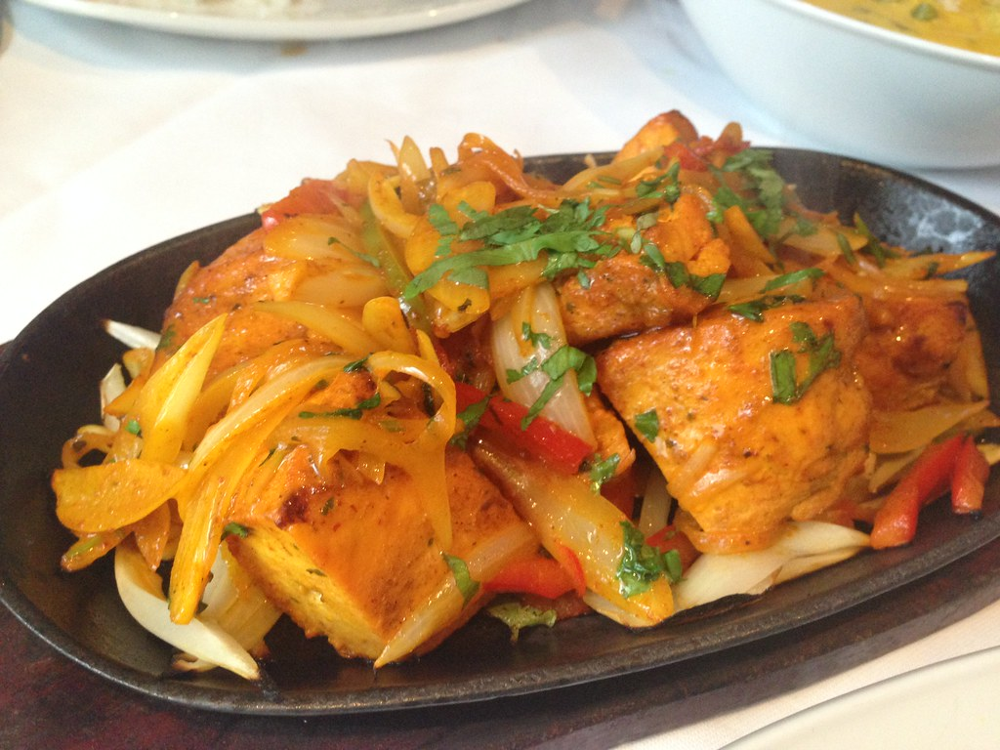

Indian
"Indian Food" by Sean MacEntee is marked with CC BY 2.0.
These dishes automatically take the number 1 spot on my list owing to my own cultural and ethnic background. There is really no wrong choice when eating Indian cuisine and it provides a wide range of choices to satisfy any of your cravings. From Samosas, to Biryani, to Gulab Jamun the sheer variety of sweet and savory food choices in this category allows everyone to walk out satified with their pants unbuttoned.